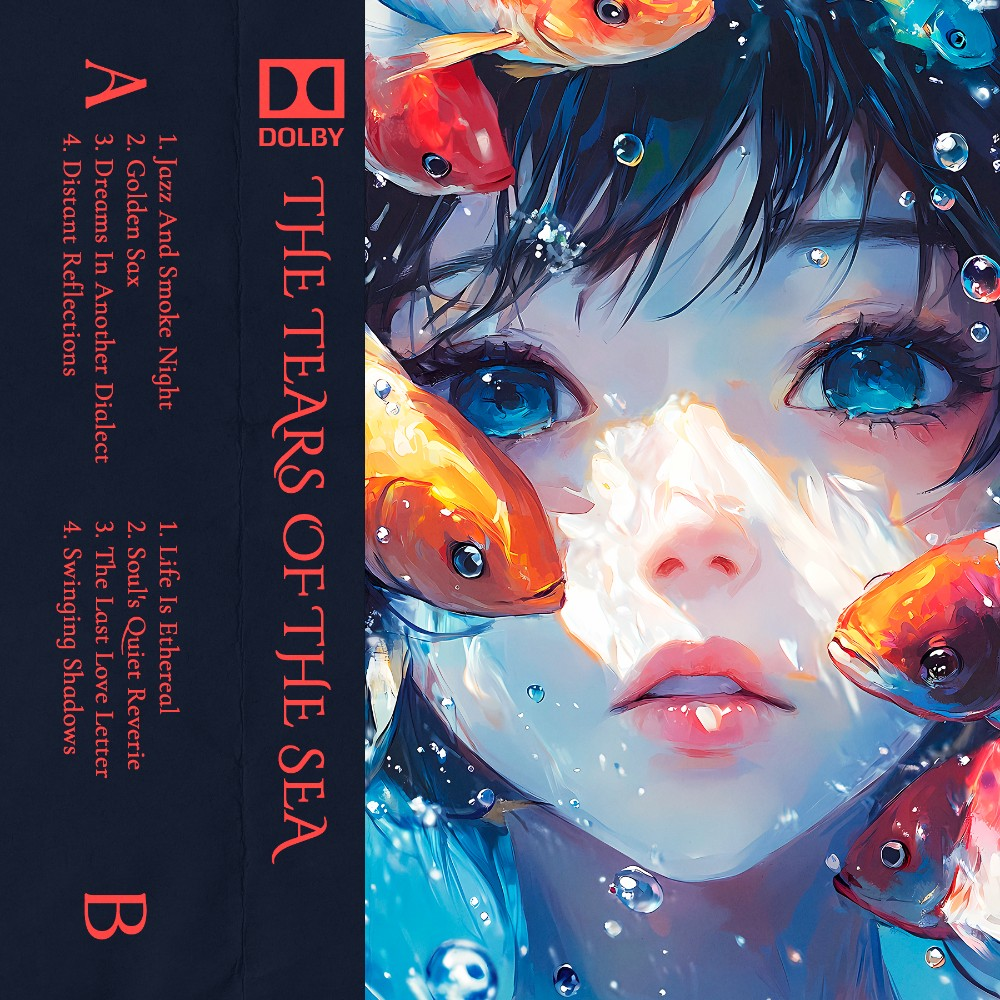
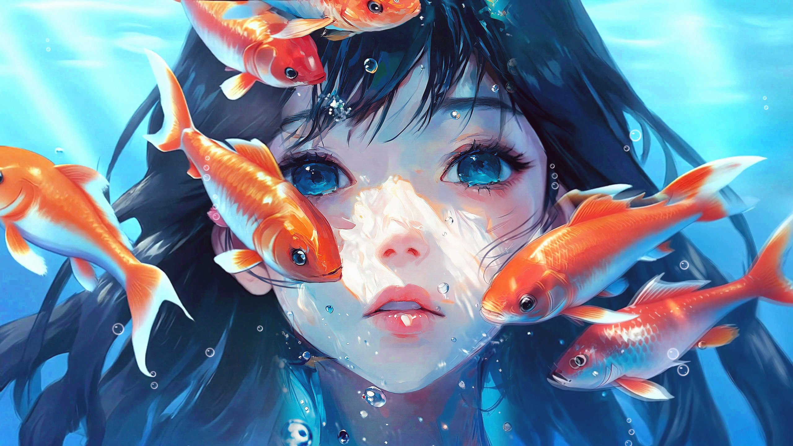

Mockups, not the built site. Each frame is one screen at laptop size, in scroll order. Everything uses only what is printed on the cover: its navy, its red, the painting, and its lettering. The title is traced from the cover; the track text is Fondamento, the closest match to the printed font.
The Dolby mark shows only where the printed cover itself is shown. Anything rebuilt for the site leaves it out: it is a registered trademark, so an official site can only redraw it with Dolby's permission.
A. The insert, unfolded my pick
The page starts as the printed cassette insert. Scrolling slides the card away and the painting opens up and moves. The card comes back, laid flat, as the tracklist. His other tapes sit on a shelf.
Mabisyo
TapesListen

scroll to open
A1First screen. The cover exactly as printed, still.

TapesListen
Jazz And Smoke NightA1 · 2:53
A2After scrolling. The card has slid to a spine, the painting is wide and the loop plays.
Mabisyo · Chile · 2024Cassette and digital on Bandcamp
A3The card laid flat is the tracklist. Each track links to Bandcamp. The shelf peeks in below.
Mabisyo · tapes
The Tears of the Sea
2024 · 8 tracks · open the tape
A4The shelf. Every Mabisyo cover has a printed spine, so the catalog is the spines. Picking one pulls it out.
B. The descent
Scrolling sinks you. The video follows the scroll: close on her face at the surface, then pulling back and down into the dark, where the tracks are. This needs a new video, and a scroll-tied video shows every frame slowly, so glitches are easier to see.
Mabisyo
SurfaceSide ASide BFloor
B1Surface. Close on her face, title in the light.
Side A · 2 · 5:22
Golden Sax
SurfaceSide ASide BFloor
B2Mid-water. The camera has pulled back, and one track at a time passes by.
Listen on BandcampName your price
SurfaceSide ASide BFloor
B3The floor. The painting is almost gone, and the card's navy takes over.
C. Side A, Side B
The page is the tape. Scrolling plays Side A, the page flips over, then Side B. The painting sits in a narrow window at the edge.
Mabisyo · The Tears of the Sea
Side A · 16:37
C1Side A. The reel line at the bottom is the scroll position.